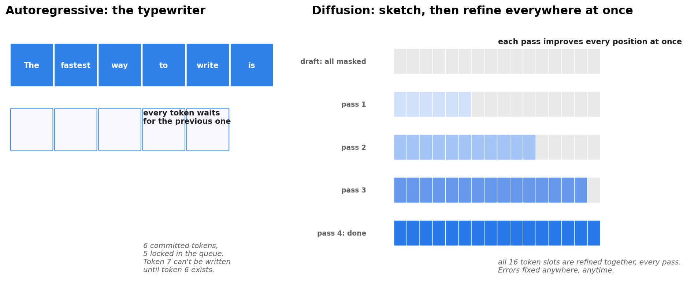
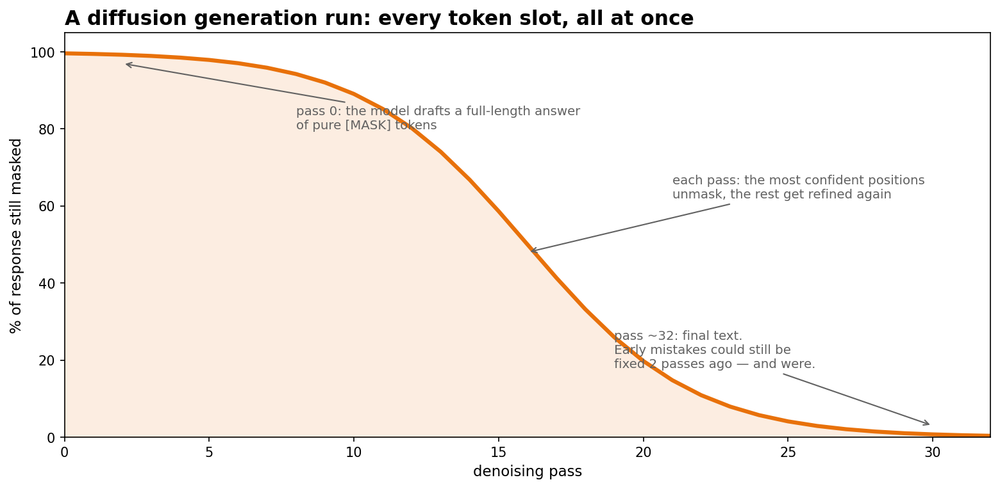
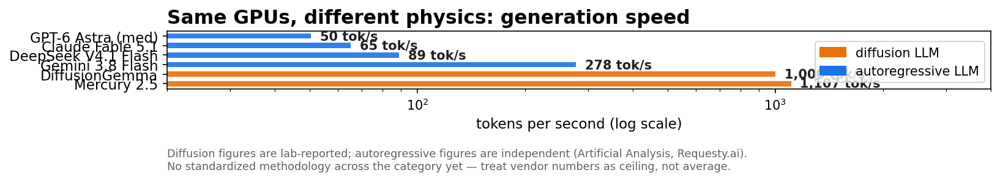
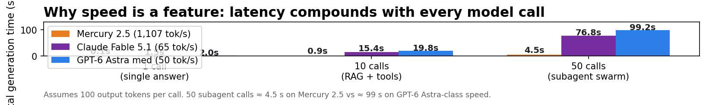

On September 8, 2026, Inception Labs announced Mercury 2.5 — which the company describes as the largest diffusion language model ever trained. The headline number: 1,107 tokens per second on widely available NVIDIA GPUs, at quality the company says matches the cost-optimized frontier tier (GPT-5.6 Luna Low, Gemini 3.5 Flash-Lite, Claude Haiku 4.5). It's a 40% intelligence jump over Mercury 2, and it's aimed at one thing the whole industry pretends doesn't exist: the speed ceiling built into how every mainstream LLM writes.
ELI5: the typewriter vs. the sketch artist
Every LLM you've ever used writes like a typewriter. It picks token 1, commits to it forever, then picks token 2, then token 3 — left to right, one at a time. If token 4 turns out to be wrong, too bad: token 7 is already written. This is autoregressive generation, and it has been the industry's only option in production since GPT-3. Its throughput is capped by a physical fact: token n can't exist until token n−1 does.
Mercury 2.5 writes like a sketch artist. It drafts the entire answer at once — every slot filled with a placeholder — then refines the whole thing in parallel passes, exactly the way Stable Diffusion turns noise into a picture. Nothing is ever locked in. A mistake in the first word can be fixed in the final pass, because every pass touches every position. This is diffusion generation, and it's the first time the architecture has gone from research curiosity to a general-availability production API.

How it works: unmasking in four steps
- Fix the answer length first. Diffusion needs a fixed number of token slots up front — every slot starts as a
[MASK]. (Choosing length ahead of time is the architecture's most awkward habit; variable-length decoding is still an open problem.) - Attend in both directions. Autoregressive models mask the future — each token only sees what's left of it. Diffusion uses bidirectional attention: every token slot sees everything on both sides, in every pass. This is why 2026 research shows diffusion beating autoregressive models on tasks with global constraints — "list exactly five items," "keep these two paragraphs consistent" — the model can check the whole draft at once.
- Denoise, don't decode. Each pass predicts all masked slots simultaneously. The most confident predictions unmask; uncertain slots stay masked and get refined in the next pass. A typical run uses on the order of ~32 passes — but that's ~32 parallel operations over the full answer, not 32 sequential token commits.
- Tune the reasoning dial. Mercury 2.5 exposes tunable reasoning: more denoising passes buy accuracy, fewer buy speed. It's the same quality/latency knob every frontier API has now, but the knob is honest here — it directly controls compute per output.

State of the art: the numbers, with the caveats printed
Speed. Mercury 2.5's 1,107 tok/s is vendor-reported. Independent measurements of the autoregressive competition (Artificial Analysis, Requesty.ai): Gemini 3.8 Flash 277.5 tok/s, DeepSeek V4.1 Flash 89, Claude Fable 5.1 65.1, GPT-6 Astra (medium) 50.4. Two cautions, both from third-party writeups on the launch: nobody uses a standardized methodology in this category, and the diffusion numbers are lab-reported — treat them as a ceiling, not your average. Even discounted by half, though, diffusion sits in a different band.

It's not the only diffusion game in town. Google's DiffusionGemma reports 1,000+ tok/s on H100 and 700+ on a consumer RTX 5090 — also vendor figures — while Google's Gemini Diffusion remains experimental. The open diffusion models are free to self-host, which is why researchers treat this track seriously even when the flagship numbers come from marketing pages.
Quality. A 40% intelligence gain over Mercury 2, benchmarked across agentic tool use (Tau3Bench Telecom), scientific reasoning (GPQA Diamond, SciCode), instruction following (IFBench), long-context recall (AA-LCR), and terminal coding (TerminalBench). Inception positions it against Haiku 4.5 and Flash-Lite — the cheap-and-fast tier, not the flagship reasoning tier. That's the honest framing: this is not trying to out-think GPT-6 Astra. It's trying to out-serve it.
Price and plumbing. $0.20/M input tokens, $0.75/M output — with an 80% launch discount bringing those to $0.04 and $0.15. OpenAI-compatible API, so existing apps switch with minimal code changes. 260K-token context window — roughly a 500-page book in one prompt.
The context gap. The single biggest capability gap diffusion still has: no vendor has published a 1M-token context figure for a diffusion model, while 1M windows are now standard across GPT-6 Astra, Claude Fable 5.1, Gemini 3.8 Flash, and DeepSeek V4.1 Flash. Long-context is autoregressive home turf for now.
The ecosystem bet. Inception also announced Mercury Voice (sub-170ms time-to-first-token for voice agents — early adopter OpenCall reports median latencies under 200ms) and Mercury Router, a model router built on diffusion itself. The strategy is clear: own the workloads where latency compounds across dozens of model calls — voice agents, search and RAG pipelines, coding subagents. Watch the math:

Fifty subagent calls generating 100 tokens each: ~4.5 seconds on Mercury 2.5 vs. ~99 seconds at GPT-6-Astra-class speed. When your agent makes the call dozens of times before answering once, throughput is the product.
Takeaways
- Diffusion LLMs went production. Mercury 2.5 (Sept 2026) is the first dLLM shipping as a GA API: 1,107 tok/s claimed, Haiku-tier quality, OpenAI-compatible endpoints.
- The mechanism is sketch-then-refine: all token slots start masked and get denoised in parallel passes with bidirectional attention — early errors can be fixed mid-generation, which autoregressive models physically can't do.
- Read speed claims with the vendor discount applied. Diffusion numbers are lab-reported; autoregressive numbers above are independent. There is no standardized benchmark methodology in this category yet.
- The gap that matters is context. Diffusion owns speed; autoregressive owns the 1M-token window. Until a diffusion model closes that, they serve different workloads.
- The buying question is now real: if your workload makes 10–50 model calls per user answer — agents, voice, RAG — a diffusion model at $0.04/M input tokens is no longer an experiment. It's the cheap tier's fastest option.
Companion notebook: diffusion-llm.ipynb — simulate a masked-diffusion decoder step by step and watch parallel unmasking beat left-to-right generation.
Sources: Inception Labs launch announcement (Sept 8, 2026); Artificial Analysis and Requesty.ai independent speed trackers; Google DiffusionGemma reported figures. Vendor figures are self-reported.